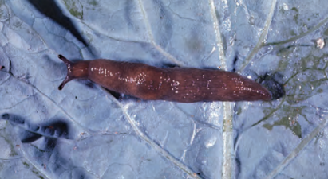
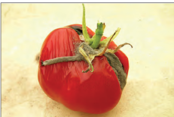
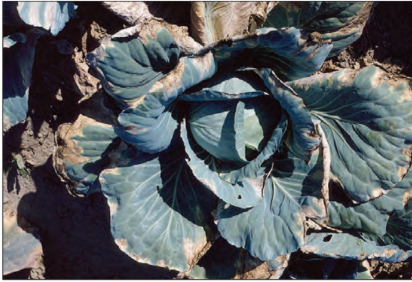
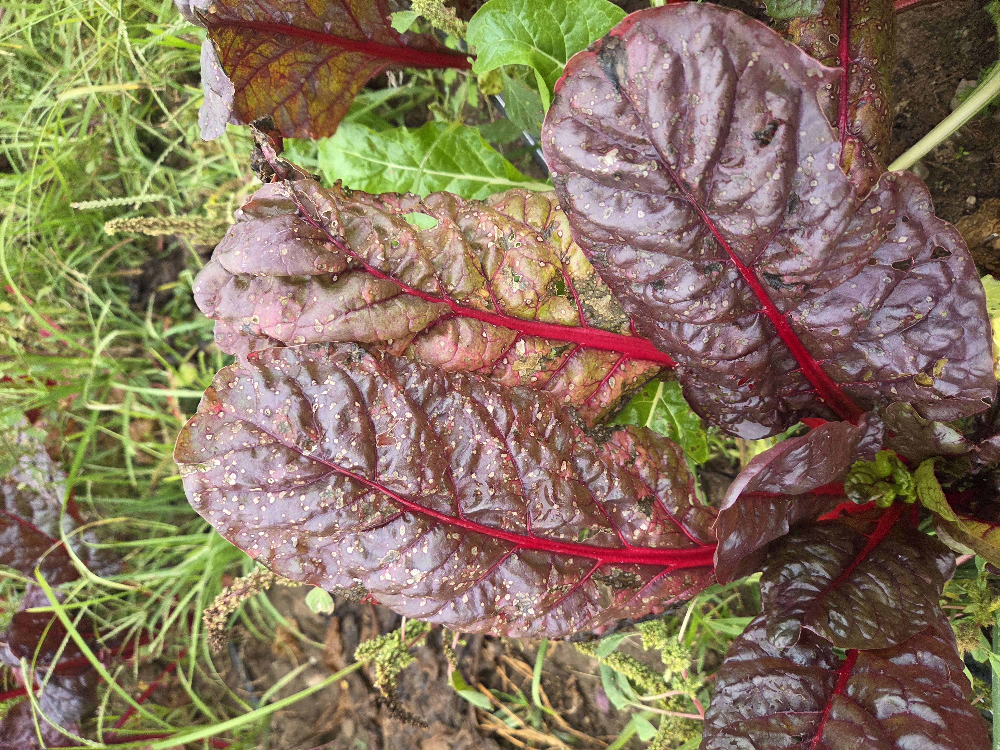
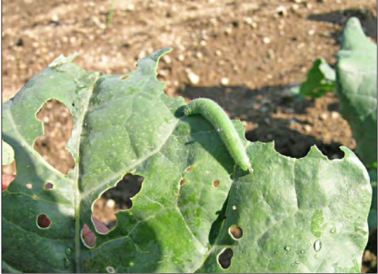
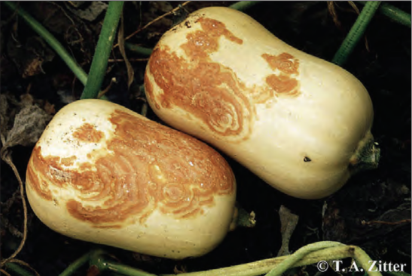
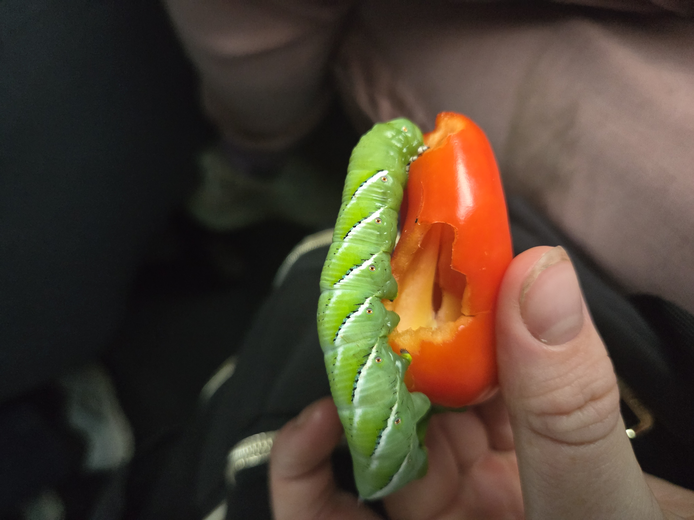

Managing Pests
The Campus Farm uses preventive, physical, biological, and targeted treatment methods to manage crop pests.
General Pest-Management Strategies
- Crop rotation: Changes food, host availability, and habitat for pests.
- Physical removal: Includes hand removal, sticky traps, and vacuums.
- Kaolin clay: Creates a film barrier on the plant.
- Natural-enemy release: Introduces beneficial organisms that prey on pests.
- Bacillus thuringiensis (Bt): A soil bacterium used to kill certain insect larvae.
- Insecticidal soap: Used to control soft-bodied insects such as aphids.
Specific Pests and Management Methods
- Hornworm
- Hornworms eat large amounts of tomato and pepper foliage. They can be managed by encouraging parasitic wasps and removing the caterpillars by hand.
- Potato beetle
- Management methods include physical removal and spinosad, which causes the insect to lose muscle control.
- Aphids
- Aphids affect many crops. They can be managed with insecticidal soap and by encouraging natural predators.
- Cabbage aphids
- Management methods include parasitic wasps and insecticidal soap.
- Cabbageworms
- Weed control can help prevent overwintering. Other management methods include parasitic wasps, predators such as praying mantises, spinosad, and Bt.
- Flea beetles
- Management methods include row covers and crop rotation.
- Gray garden slugs
- Management methods include tillage, mulch or other ground coverage, and kaolin clay.
Managing Diseases
Disease management combines resistant varieties, sanitation, crop rotation, water management, and other crop-specific practices.
- Black rot
- A bacterial disease. Choose resistant varieties, treat seeds with hot water, avoid overhead irrigation, and rotate crops.
- Leaf spot
- Caused by fungi. Treat seeds with hot water, use clean transplants, and rotate crops.
- White mold
- A fungal disease. Use raised beds, avoid overcrowding, and avoid excessive irrigation.
- Downy mildew
- A fungal disease. Use crop rotation and maintain good soil drainage.
- Fusarium wilt
- A soil-borne fungal disease. Purchase clean seed, destroy crop residue after harvest, and rotate crops.
- Angular leaf spot
- A fungal disease. Management methods include crop rotation and copper compounds.
- Powdery mildew
- A fungal disease. Control weeds to reduce crop stress, grow resistant varieties, plant crops in smaller parcels, and use sulfur or copper when appropriate.
- Aster yellows
- Caused by phytoplasmas. It infects phloem cells in lettuce, causing leaf blanching. Plow lettuce fields after harvest.
- Bottom rot
- Bottom rot causes the stem to collapse and the plant to fall over. Rotate with grass-family crops and green manure, use raised beds, and avoid adding organic matter immediately before planting.
- Bacterial canker
- Can cause wilting and browning of fruit. Treat seeds with hot water.
- Gray mold
- May affect greenhouse tomato leaves and stems. Minimize leaf wetness, monitor soil calcium levels, and use copper when appropriate.
- Leaf mold
- Causes yellow spots on leaves. Practice sanitation, minimize leaf wetness, and plant resistant varieties.
- Phytophthora blight
- A pathogen that attacks plant roots. Choose resistant varieties, rotate crops, use raised beds, and maintain good soil structure.
Major Campus Farm Wholesale Crop Groups
Each crop at the Campus Farm is affected differently by pests and diseases. The cards below identify concerns associated with each of the farm's main wholesale crops.
Lettuce/Salanova
- Pests
- Aphids and gray garden slugs
- Diseases
- Aster yellows, bottom rot, and downy mildew

Tomatoes
- Pests
- Hornworms, potato beetles, aphids, and flea beetles
- Diseases
- Bacterial canker, gray mold, leaf mold, phytophthora blight, and white mold

Kale/Collards
- Pests
- Cabbage aphids and cabbageworms
- Diseases
- Black rot, leaf spot, and white mold

Chard
- Pests
- Aphids and flea beetles
- Diseases
- Leaf spot, downy mildew, and fusarium wilt

Napa Cabbage
- Pests
- Cabbage aphids and cabbageworms
- Diseases
- Black rot, leaf spot, and white mold

Winter Squash
- Pests
- Squash bugs
- Diseases
- Angular leaf spot, black rot, and powdery mildew

Peppers
- Pests
- Hornworms, potato beetles, aphids, and flea beetles
- Diseases
- Phytophthora blight and white mold
